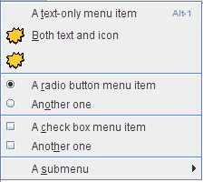
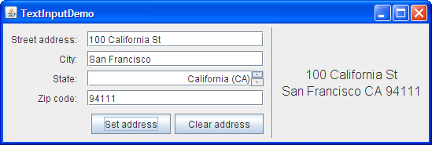

Lección: Usando Componentes Swing
Sección: Cómo Usar Varios Componentes
Cómo Usar los Separadores
La clase
JSeparator
suministra una línea divisoria horizontal o vertical o un espacio vacío. Es más comúnmente utilizado en menús y
barras de herramientas. En realidad, puede usar separadores sin incluso saber que una clase
JSeparator existe, ya que los menus y las
barras de herramientas suministran métodos de convenencia que crean y añaden
separadores personalizados para sus contenedores. Los separadores son de alguna forma similares a los
bordes, excepto que son componentes
genuinos y, como tales, son dibujados dentro de un contendor, en vez de alrededor de los límites de un
componente particular.
Aquí tiene una foto de un menú que tiene tres separadores, usados para dividir el menú en cuatro grupos de elementos:

El código para añadir elementos de menú y separadores al menú es extremadamente simple, se condensa en algo como esto:
menu.add(menuItem1);
menu.add(menuItem2);
menu.add(menuItem3);
menu.addSeparator();
menu.add(rbMenuItem1);
menu.add(rbMenuItem2);
menu.addSeparator();
menu.add(cbMenuItem1);
menu.add(cbMenuItem2);
menu.addSeparator();
menu.add(submenu);
Añadir separadores a una barra de herramientas es similar. Puede encontrar el código completo explicado en las
secciones "Cómo hacer" para los
menús y las barras de herramientas. Si quiere más control
sobre los separadores en los menús y las barras de herramientas, puede directamente usar las subclase de
JSeparator que las implementan:
JPopupMenu.Separator y
JToolBar.Separator.
En particular, JToolBar.Separator tiene una IPA para especificar el tamaño del separador.
Usar JSeparator
Puede usar la clase JSeparator directamente para proporcionar una línea divisoria en cualquier
contenedor. La siguiente foto muestra una IGU que tiene un separador a la derecha del botón etiquetado Fuego.

Los separadores casi no tienen IPA y son extremadamente fáciles de usar siempre y cuando tenga una cosa en
mente: En la mayoría de las implementadciones, un separador vertical tiene una altura preferida de 0, y un
separador horizontal tiene un ancho preferido de 0. Esto significa que un separador no es visible a menos
que o establezca su tamaño preferido o lo coloque bajo el control de un gestor de diseño tal como un
BorderLayout o BoxLayout que lo estira para llenar su área de visualización
disponible.
El separador vertical tiene un poco de ancho (y la horizontal un poco de altura), de forma que debería ver un espacio donde está el separador. Sin embargo, la línea divisoria real no es dibujada a menos que el ancho y alto sean ambos no cero.
El siguiente trozo de código muestra cómo ListDemo coloca junto el panel que contiene el separador vertical.
Puede encontrar el código fuente completo para ListDemo en
ListDemo.java.
JPanel buttonPane = new JPanel();
buttonPane.setLayout(new BoxLayout(buttonPane,
BoxLayout.LINE_AXIS));
buttonPane.add(fireButton);
buttonPane.add(Box.createHorizontalStrut(5));
buttonPane.add(new JSeparator(SwingConstants.VERTICAL));
buttonPane.add(Box.createHorizontalStrut(5));
buttonPane.add(employeeName);
buttonPane.add(hireButton);
buttonPane.setBorder(BorderFactory.createEmptyBorder(5,5,5,5));
Como el código muestra, los botones, el separador, y el campo de texto comparten un contenedor único
─ una instancia de JPanel que usa un
box layout de izquierda a derecha. Gracias
al gestor de diseño (y a el hecho de que los separadores tienen tamaños máximos ilimitados), el separador es
automáticamente hecho tan alto como su área de visualización disponible.
En el código precedente, los puntales horizontales son componentes invisibles utilizados para proporcionar espacio alrededor del separador. Un borde vacío de 5 puntos proporciona un cojín alrededor del panel, y también sirve para evitar que el separador se extienda hasta el componente superior y el borde de la ventana debajo de él.
Aquí tiene una foto de otro IGU que usa un separador, esta vez se coloca una linea divisoria entre un grupo de controles y un área de visualización.

Puede encontrar el código en el índice de ejemplos. Aquí está el código que configura el contenedor de separadores:
JPanel panel = new JPanel(new BorderLayout());
...
panel.setBorder(BorderFactory.createEmptyBorder(
GAP/2, //arriba
0, //izquierda
GAP/2, //abajo
0)); //derecho
panel.add(new JSeparator(JSeparator.VERTICAL),
BorderLayout.LINE_START);
panel.add(addressDisplay,
BorderLayout.CENTER);
Como en el último ejemplo, el panel usa un borde vacío de forma que el separador no se extiende hasta los
límites de su contenedor. Colocar el separador en el área más a la izquierda del contenedor controlado por
BorderLayout hace que el separador sea tan alto como el componente de visualización de direcciones
que está en el centro del contenedor. Vea
Cómo Usar BorderLayout para obtener
detalles de como los diseños de borde funcionan.
LA IPA del Separador
La IPA para usar separadores es mínima, ya que no tienen contenidos y no responden a la entrad del usuario.
| Constructor o Método | Propósito |
|---|---|
|
void addSeparator()
void addSeparator(Dimension) (en JToolBar)
|
Añade un separador de barra de herramientas (el cual es invisible en su mayoría, si no todas, las apariencias) al final actual de la barra de herramientas. El argumento opcional especifica el tamaño del separador. La versión sin argumentos de este método usa un separador con un valor por defecto, como determina la apariencia actual. |
|
void addSeparator()
void insertSeparator(int) (en JMenu)
|
Coloca un separador en un menú. El método addSeparator coloca el separador en el final
actual del menú. El método insertSeparator inserta el separador en el menú en la posición
especificada.
|
|
void addSeparator()
(en JPopupMenu)
|
Coloca un separador en el final actual de un menú emergente. |
|
JSeparator()
JSeparator(int) |
Crea un separador. Si no especifica ningún argumento, el separador será horizontal. El argumento puede
ser o SwingConstants.HORIZONTAL o SwingConstants.VERTICAL.
|
|
void setOrientation(int)
int getOrientation() (en JSeparator)
|
Establece u obtiene la orientación del separador, el cual puede ser o
SwingConstants.HORIZONTAL o SwingConstants.VERTICAL.
|
|
JToolBar.Separator()
JToolBar.Separator(Dimension) |
Crea un separador para usar en una barra de herramientas. El argumento opcional especifica el tamaño del separador. |
|
setSeparatorSize(Dimension)
(en JToolBar.Separator)
|
Especifica el tamaño del separador. Más específicamente, la Dimension especificada es usada
como los tamaños mínimos, preferidos y máximos del separador.
|
| JPopupMenu.Separator() | Crea un separador para el uso en un menú. |
Ejemplos que Usan Separadores
Varios de los ejemplos de esta lección usan separadores, usualmente en menús. Aquí está la lista de algunos de los más interesantes ejemplos.
| Ejemplo | Dónde se Describe | Notas |
|---|---|---|
ListDemo |
Esta sección y Cómo Usar Listas | Usa un separador vertical en un panel controlado por un diseño de caja horizontal. |
TextInputDemo
|
Esta sección y Cómo Usar Campos de Texto Formateado | Usa un separador vertical a la izquierda de un panel controlado por un diseño de bordes. |
MenuDemo |
Esta sección y Cómo Usar Menús |
Usa el método addSeparator de JMenu para colocar separadores en un menú.
|
ToolBarDemo2
|
Cómo Usar Barras de Herramientas |
Usa el método addSeparator de JToolBar para colocar dos clases de botones.
|
Si está programando en JavaFX, vea Usar Controles del IU de JavaFX.